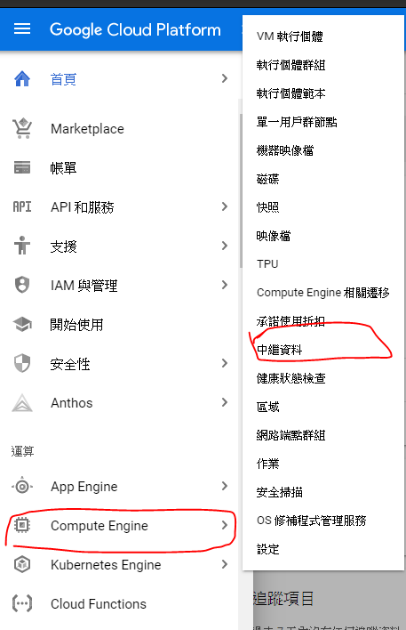
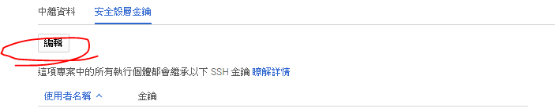
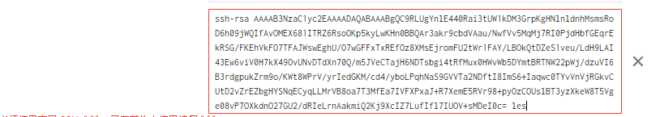
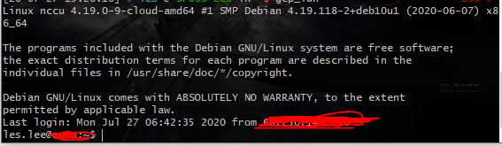

# [GCP] 如何使用 SSH 讓使用者登入 VM Instance
GCP (google cloud platform) 是一個 google 提供的雲端運算服務平台。
其中擁有許許多多的雲端服務，諸如 database, cloud computing…, 甚至是大數據的分析工具… 等等，應有盡有。
我們也可以在 GCP 中租一個虛擬雲端空間，搭建個人的雲端作業系統，也就是本文說的 VM Instance 。
本文假設讀者已經透過各種方法擁有了自己的 VM instance，卻苦無不知如何使用 ssh 登入 gcp 的 VM instance，因此前來尋求解答。
以下正文開始
在 gcp 的 ssh 中，我們需要使用 ssh key 作為登入密鑰。因此我們需要先生出自己的 ssh key。
我們可以使用 ssh-keygen 一行指令生成
1
$ ssh-keygen
如此，我們便在 ./ssh 中擁有了自己的 ssh key。其中 rsa_id.pub 是公鑰，待會要放上 GCP ；rsa_id 是私鑰，要自己保存好。
接下來，前往自己的 VM Instance，在邊側欄找到 Compute Engine > 中繼資料

點選 「安全殼層金鑰」 (SSH 金鑰)，並且選取「編輯」。

點選「新增項目」，後將剛剛的 rsa_id.pub 的內容貼上，之後儲存。

它就會對應公鑰的最後一小段的使用者名稱在 VM Instance 自動創建對應的使用者。
接下來就可以嘗試使用 SSH 連線進 GCP 了！
